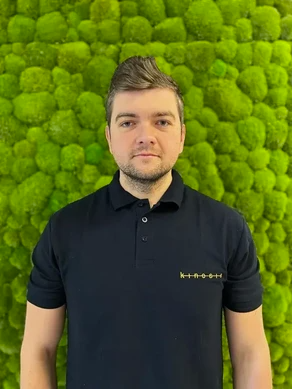

Mgr Maciej Liedel - fizjoterapeuta z pasją do ruchu.
Terapia manualna, stomatologiczna i trening.
Wiedza oparta na dowodach.
Przejrzyste zasady współpracy.
Warszawa | Radzymin
Wstępna analiza Twojego problemu.
Kompleksowe podejście do Twojego zdrowia oparte na nowoczesnej diagnostyce i terapii manualnej.
Specjalistyczna terapia stawów skroniowo-żuchwowych. Pomoc w leczeniu bruksizmu, napięciowych bólów głowy oraz dolegliwości po zabiegach stomatologicznych.
Mobilizacje i manipulacje kręgosłupa oraz stawów obwodowych. Skuteczna walka z ostrym i przewlekłym bólem kręgosłupa.
Rehabilitacja po urazach sportowych (skręcenia, zerwania więzadeł). Przygotowanie motoryczne i prewencja kontuzji dla amatorów i profesjonalistów.
Indywidualny proces powrotu do sprawności po zabiegach ortopedycznych. Obejmuje ćwiczenia, terapię tkanek miękkich i edukację pacjenta.
Precyzyjna terapia punktów spustowych za pomocą igieł akupunkturowych. Natychmiastowa ulga w silnych napięciach mięśniowych.
Dogłębna analiza Twojego problemu, testy funkcjonalne i ułożenie planu terapii. Pierwszy krok do życia bez bólu.
Absolwent warszawskiego AWF, specjalizujący się w nowoczesnej rehabilitacji funkcjonalnej.
Moja praca opiera się na holistycznym podejściu do pacjenta. Specjalizuję się w masażu głębokim tkanek miękkich, rehabilitacji pooperacyjnej oraz fizjoterapii stomatologicznej.
Jako certyfikowany terapeuta manualny, pomagam pacjentom wrócić do pełnej sprawności po urazach sportowych oraz w chronicznych dolegliwościach bólowych.
Pracuję w oparciu o dowody: moje zalecenia znajdziesz z omówieniem badań w sekcji Publikacje.

ul. Sewerynów 6, lok. 1D
00-331 Warszawa
Gabinet znajduje się w ścisłym centrum, w pobliżu Kampusu Głównego UW. Wejście bezpośrednio od ulicy Sewerynów. Parkowanie dostępne wzdłuż ulicy (Strefa Płatnego Parkowania).
ul. Juliusza Słowackiego 2, lok. 14
05-250 Radzymin
Centrum Kinesis znajduje się w sercu Radzymina. Dla pacjentów dostępny jest bezpłatny parking bezpośrednio przy budynku.
Najświeższe badania o kolanie, urazach i fizjoterapii — w krótkim streszczeniu po polsku, z linkiem do oryginału. Pełna lista badań w moich notatkach klinicznych.
Cztery krótkie kroki: bezpieczeństwo, mapa bólu, szczegóły, gotowy brief dla Macieja. To nie jest diagnoza — to przygotowanie do wizyty.